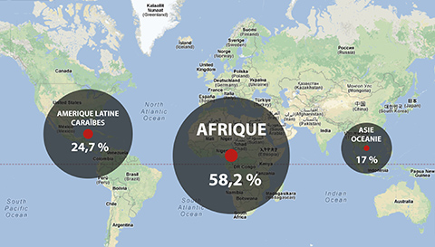

D'après Larousse "Type d'échanges internationaux fondés sur une solidarité Nord-Sud, les consommateurs du Nord acceptant d'acheter des marchandises à des prix permettant aux producteurs du Sud d'améliorer leurs conditions de vie et de travail, dans une perspective de développement durable."
Le commerce équitable est une alternative au commerce mondial. Cela permet aux producteurs de mieux vivre de leur métier. Le commerce équitable est aussi un des piliers d’une économie respectueuse des droits économiques, sociaux culturels et environnementaux.
De plus, le commerce équitable repose sur une organisation des échanges visant à équilibrer le rapport producteur / consommateur entre les pays développés et les pays en développement.
Comment le commerce équitable est-il né ?
Le commerce équitable est né de la volonté de réajuster le jeu du commerce international qui fait reposer sur les petits producteurs et artisans des pays en développement une forte pression. Son objectif est de changer les modes de production et de consommation pour leur assurer un travail mieux payé, dans de meilleures conditions.
Quelques critères
Critères généraux du commerce équitable
Economiques
accès au marché facilité
paiement d’un prix juste
relations commerciales à long terme
préfinancement des commandes si besoin
transparence et traçabilité
Sociaux
respect des conventions fondamentales de l’OIT
absence du travail des enfants et du travail forcé
Environnementaux
respect de la biodiversité
interdiction des substances dangereuses
utilisation des ressources naturelles
gestion écologique des déchets et des emballages
Sensibilisation
sensibilisation des populations aux enjeux d’un commerce mondial plus juste
Quelques chiffres
En 2012, il y a plus de deux millions de producteurs et de travailleurs qui bénéficient du commerce équitable dans le monde.
80 millions de familles consomment "équitable"
La part des produits du commerce équitable dans les échanges mondiaux représente 5 milliards d'euros en 2012.
Chaque Français a consacré seulement 6,24 euros à ses achats équitables en 2012.
Le gouvernement évalue à 400 le nombre d’entreprises françaises qui travaillent dans ce secteur, ce qui correspond à environ 10.000 emplois.
Répartition des producteurs équitables dans le monde

Label
Afin de reconnaître les produits issus du commerce équitable, certains label ont été mis en place.